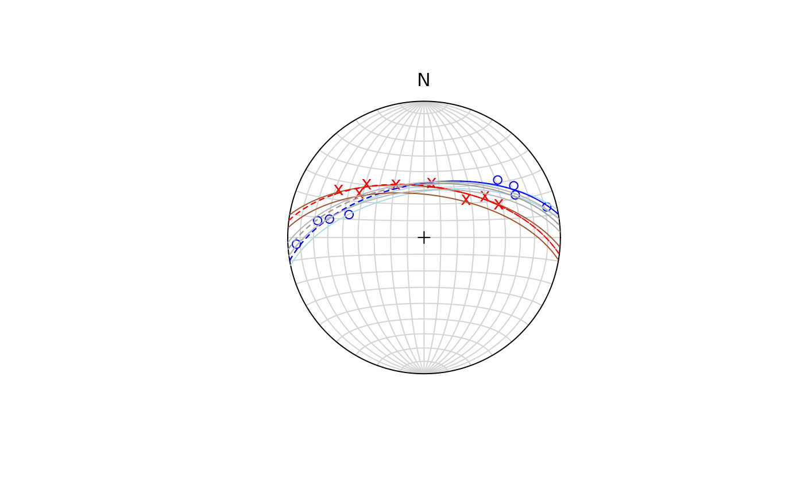

Least-square fit of small and great circles to spherically projected data
Source:R/best_pole.R
regression_gray.RdFinds the best small and great circles using the algorithm by Gray et al. (1980)
Value
list. axis_c is the axis of the small-circle cone, axis_g is the axis of the great-circle,
cone_angle is the half-apical angle of the cone, r_* is the residual (in the angle between pole and great/small circle), E_* are the errors, and Vr is the variance ratio.
References
Gray, N.H., Geiser, P.A., Geiser, J.R. (1980). On the least-square fit of small and great circles to spherically projected data. Mathematical Geology, Vol. 12, No. 3, 1980.
Examples
data("gray_example")
best_clea <- regression_gray(gray_example[1:8, ])
best_bedd <- regression_gray(gray_example[9:16, ])
best_all <- regression_gray(gray_example)
stereoplot()
points(gray_example[1:8, ], col = "blue")
points(gray_example[9:16, ], col = "red", pch = "x")
# best for cleavage
lines(best_clea$axis_c, best_clea$cone_angle, col = "lightblue")
lines(best_clea$axis_g, 90, lty = 2, col = "blue")
# best for bedding
lines(best_bedd$axis_c, best_bedd$cone_angle, col = "sienna")
lines(best_bedd$axis_g, 90, lty = 2, col = "red")
# best for all
lines(best_all$axis_c, best_bedd$cone_angle, col = "gray70")
lines(best_all$axis_g, 90, lty = 2, col = "gray60")
